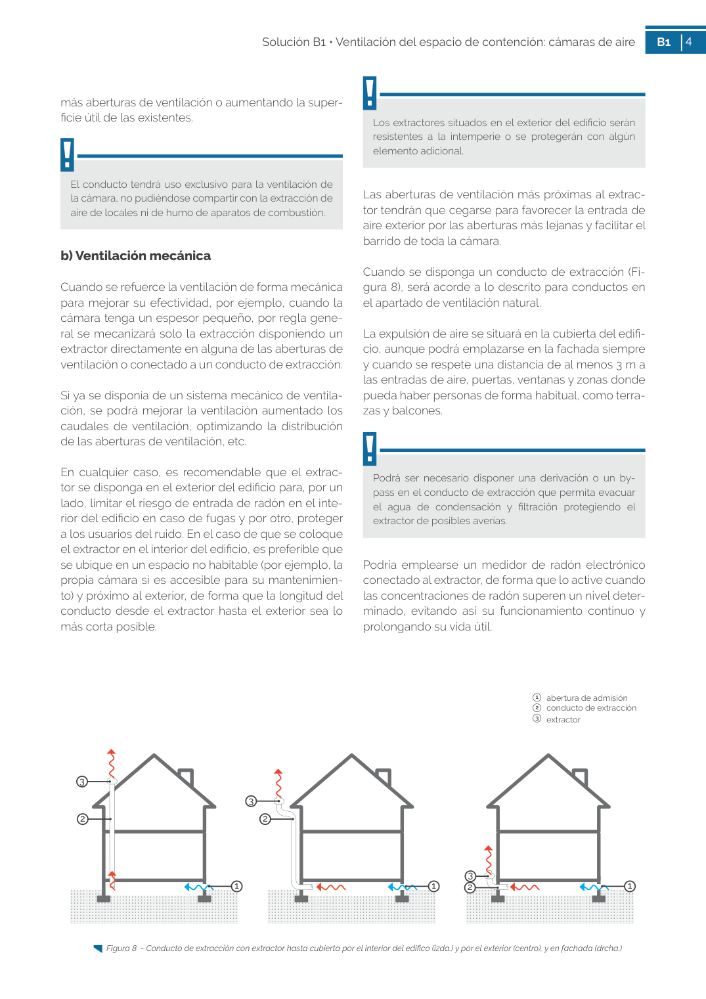

GUIA · b) Ventilación mecánica · versión sin-fecha · capa guia
Formatos: JSON compacto · Markdown · PDF fuente
Ámbito del documento · texto del ámbito · documento y tablas
Tipo: tablas, figuras · nivel 3 · sección estimada: 1 abertura de ventilación periscópica 2 cámara sanitaria · padre: a0153
b) Ventilación mecánica Cuando se refuerce la ventilación de forma mecánica para mejorar su efectividad, por ejemplo, cuando la cámara tenga un espesor pequeño, por regla gene ral se mecanizará solo la extracción disponiendo un extractor directamente en alguna de las aberturas de ventilación o conectado a un conducto de extracción. Si ya se disponía de un sistema mecánico de ventila ción, se podrá mejorar la ventilación aumentado los caudales de ventilación, optimizando la distribución de las aberturas de ventilación, etc. En cualquier caso, es recomendable que el extrac tor se disponga en el exterior del edificio para, por un lado, limitar el riesgo de entrada de radón en el inte rior del edificio en caso de fugas y por otro, proteger a los usuarios del ruido. En el caso de que se coloque el extractor en el interior del edificio, es preferible que se ubique en un espacio no habitable (por ejemplo, la propia cámara si es accesible para su mantenimien to) y próximo al exterior, de forma que la longitud del conducto desde el extractor hasta el exterior sea lo más corta posible. Figura 8 - Conducto de extracción con extractor hasta cubierta por el interior del edifico (izda.) y por el exterior (centro), y en fachada (drcha.)

PDF fuente redistribuible: copia fiel enlazada en esta página (SHA256 verificado).